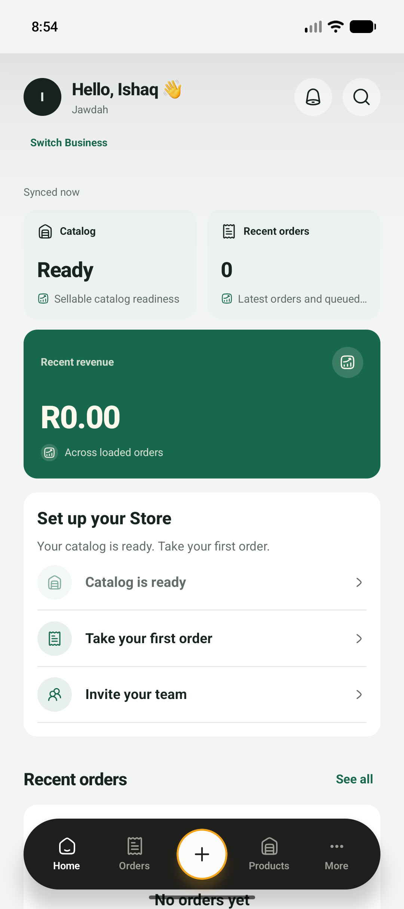
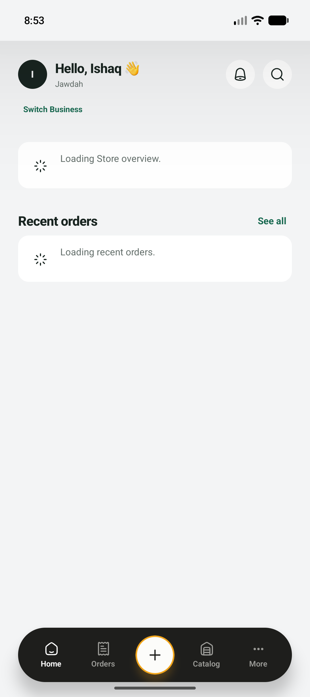

Semantic colors
Reuse background, card, foreground, mutedForeground, primary, primaryForeground, accent and border from the existing brand theme. Dark gets separate canvas, surface and raised-surface values; no inverted white cards.
ANDROID HOME · CLASSIC · FIVE DIRECTIONS
One real dashboard. Five different ways to put the next useful action within reach.
Grounded in Ishaq’s Jawdah Home capture. Light and Dark are independent of appearance. No Market Day designs.
Review only · no app changesObserved reference facts: Jawdah · Catalog Ready · 0 recent orders · R0.00 across loaded orders. All preview interactions stay local.
OUR RECOMMENDATION
Best everyday Home: the next order, meaningful business facts, and recent activity share the screen. It needs the least new navigation and scales naturally as a business grows.
Review 01 in Light + Dark →02 makes repeated selling fastest. 03 gives owners the most information with the least decoration. 04 is strongest for first-time setup. 05 prioritizes checking existing orders.
Choosing a favorite here records a workshop preference only. Production implementation begins after your explicit selection.
FROM PREVIEW TO NATIVE
Reuse background, card, foreground, mutedForeground, primary, primaryForeground, accent and border from the existing brand theme. Dark gets separate canvas, surface and raised-surface values; no inverted white cards.
Use NativeWind className for layout and semantic colors: bg-card text-foreground border-border. The existing useColors() resolves the same THEME for icon strokes, native properties and navigation. Never mix style with className on one native element.
Compose Classic presentations from shared Home header, summary, next-action, task row and order-row primitives. Keep queries, permissions, offline gates and callbacks in the current operations controller. The center Create action still opens its existing chooser.
At the existing large-text threshold, stack metrics and header actions; grow rows and let full names, values and actions wrap. Minimum 48-point targets, visible focus, explicit status labels and reduced-motion support. Browser text scaling is a design check; native TalkBack and font-scale acceptance remain later gates.
OBSERVED NATIVE EVIDENCE · 2 OCTOBER 2026
Saved screenshots inspected before design and copied with SHA-256 provenance. The bell-shaped action is “Open sync status” in the native accessibility tree.

Supporting · loaded Home ↗
Supporting · loading Home ↗Design rationale & implementation handoff · Reference provenance
SAVED PREVIEWS
Light comparison · Dark comparison · 01 full-size pair · 02 full-size pair · 03 full-size pair · 04 full-size pair · 05 full-size pair